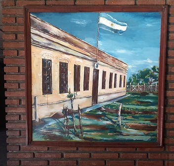
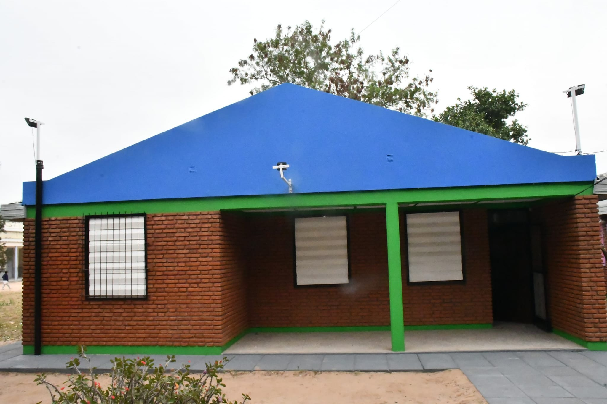
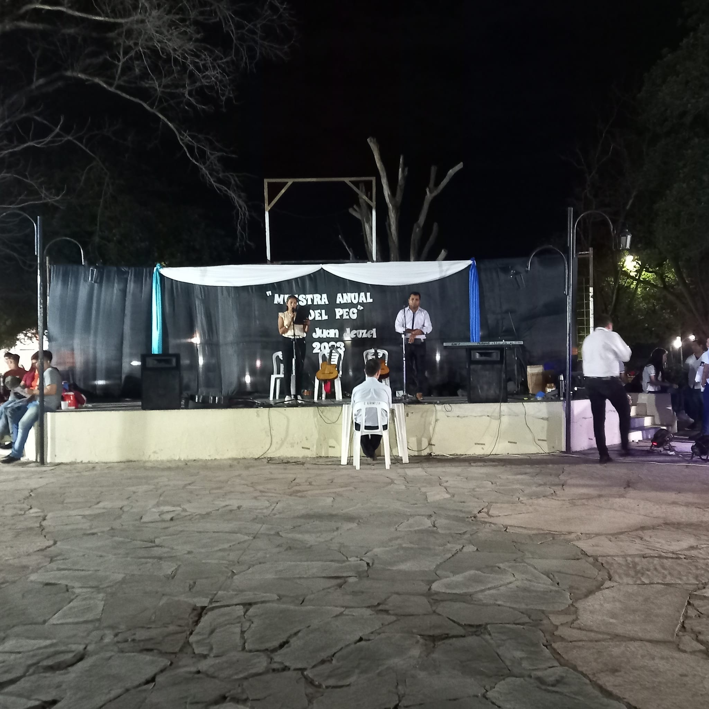

Historia del Instituto
El nacimiento de este instituto cobra vida por idea y voluntad de la señora intendente
Mónica E. Pereyra quien sintió la necesidad de luchar por la apertura de un instituto
de nivel terciario que hace mas de 20 años por
leer más

Variedad de carreras que el mercado laboral está buscando
Ante la necesidad que demostraron muchos jóvenes y adultos de continuar estudios terciarios
capacitarse en una profesión y tener trabajo digno sin tener que emigrar hacia otras localidades en busca de un
futuro mejor
leer más
NOVEDADES
"Campo Largo cuenta con su primer instituto de nivel superior"

Se realiza el acto por " El día del estudiante"

.png) INICIO
INSTITUCIÓN
CARRERAS
ESTUDIANTES
CONTACTO
INICIO
INSTITUCIÓN
CARRERAS
ESTUDIANTES
CONTACTO